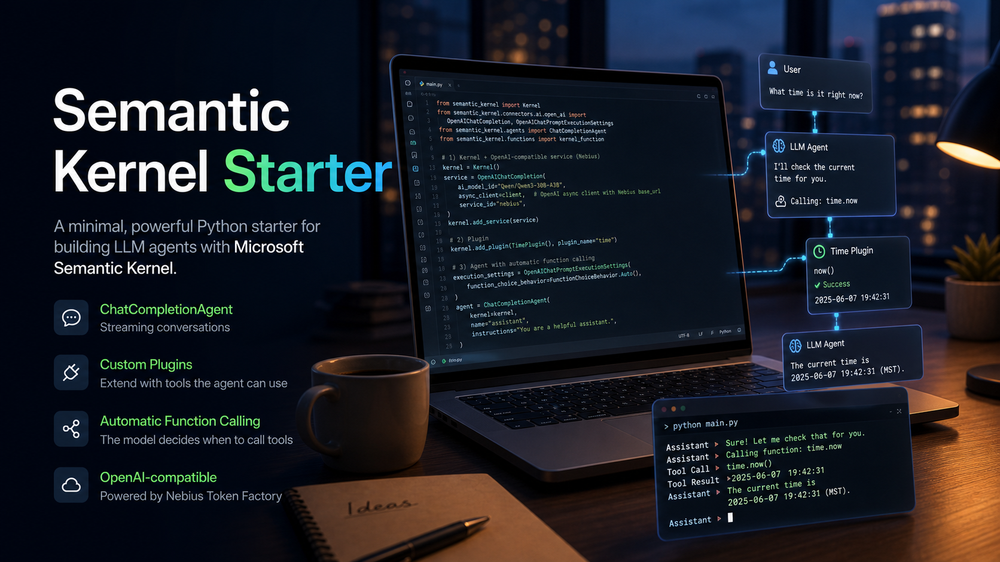

Streaming Agent
Uses ChatCompletionAgent with streamed responses for a responsive CLI experience.

Python agent starter
A compact, production-minded starter for building a streaming ChatCompletionAgent with custom plugins and Nebius Token Factory.
What it includes
Uses ChatCompletionAgent with streamed responses for a responsive CLI experience.
Includes a TimePlugin that demonstrates the @kernel_function decorator.
Enables automatic function choice so the model decides when to call tools.
Connects through Semantic Kernel's OpenAI-compatible service path.
Run it
git clone https://github.com/tirth1263/semantic-kernel-starter.git
cd semantic-kernel-starter
pip install -r requirements.txtcp .env.example .env
# set NEBIUS_API_KEY
python main.pyHow it works
The app builds a Semantic Kernel, registers an OpenAI-compatible
Nebius chat service, adds the TimePlugin, and gives the agent
automatic function-calling settings. When the user asks for the
current time, the model can call time.now instead of guessing.